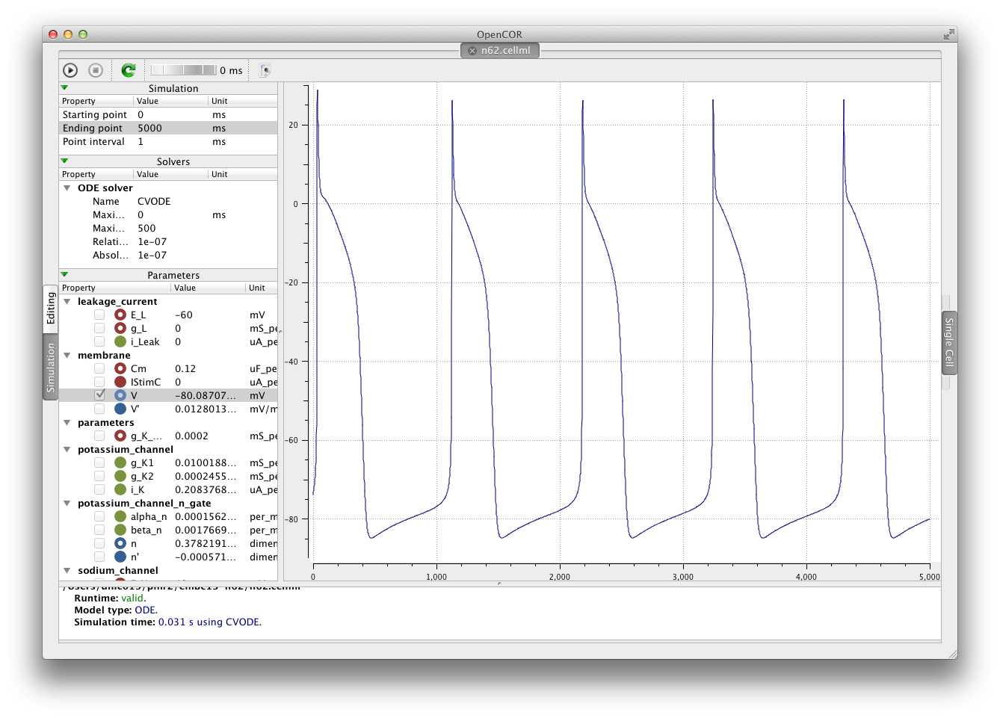

This is the CellML encoding of the 1962 Noble cardiac cellular electrophysiology model. In this version of the model we have tweaked the potassium current to prolong the self-pacing period. You can see this difference in the two figures below.
|
The original model. |
|  | The new version of the model. |
The images above are screen shots of the OpenCOR application running two different versions of this model. The 22 June 2013 snapshot version of OpenCOR was used. The links in the right-hand side menu can be used to navigate to the various aspects of this CellML exposure.